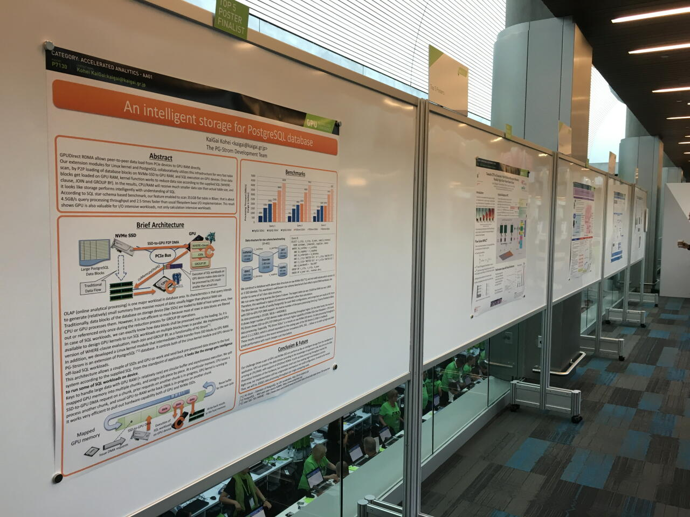

2017年07月28日(金) 28-Jul-2017 (Fri)
本日、独立行政法人情報処理推進機構（IPA）は、弊社チーフアーキテクト 海外浩平、同チーフセールスエンジニア 柏木 岳彦、同アルバイト 遠藤克浩の３名の共同提案による『ヘテロジニアスなIn-Databaseデータ解析・機械学習基盤』を含む6件を、第1回 IPA未踏アドバンスト事業の採択案件として発表いたしました。 Today, Information-technology Promotion Agency (IPA) announced six propositions, including "Heterogeneous In-Database Data Analytics & Machine-Learning Platform" jointly proposed by KaiGai Kohei (Chief Architect of HeteroDB), Kashiwagi Takehiko (Chief Sales Engineer of HeteroDB) and Endo Katsuhiro (Engineer of HeteroDB), get adopted to the 1st MITOH advanced program held by IPA.
「未踏アドバンスト事業」は、市場性、開発実現性、事業性を兼ね備えたITを活用した革新的なアイデア・プロトタイプ（製品・サービスの企画・構想を練っている段階、製品・サービスのプロトタイプ開発を継続している段階）を有し、起業または事業化に強い関心を持つ未踏的IT人材に対し、プロジェクトマネージャー等による指導・助言、活動に必要となる資金支援を行う事業です。 IPA MITOH advanced program is a public incubation program for individual persons who have strong motivation for startup and innovative idea (or prototype) that satisfies marketability and technology/business feasibility on IT region, through financial support and advices by project manager.
（IPAウェブサイトより引用） (ref: https://www.ipa.go.jp/english/humandev/third.html)
本プロジェクトでは、GPUの並列計算能力を活用して解析系SQLの高速化を実現するPostgreSQL向け拡張モジュール（PG-Strom）に、次の機能を実装する。①SSD-to-GPUダイレクトSQL実行機能 （GPU/SSD密結合によるI/O高速化）、②PL/CUDA統計解析・機械学習ライブラリ（In-databaseデータ解析処理）、③行形式⇒列形式の変換に対応したストレージ機構 （ワークロード最適化SSD/キャッシュ）。これら①～③の機能を用いて、GPUやSSDといったコモディティだが強力な処理能力を有するハードウェアと、その能力を最大限に引き出すソフトウェアの組み合わせにより、リレーショナル・データベースという情報システムの中で最もデータが集積するコンポーネントをデータ解析・機械学習の基盤として再定義する。 This project extends PG-Strom that is an extension of PostgreSQL to accelerate analytic queries using parallel computing capability of GPU, to implement three new features below. (1) SSD-to-GPU Direct SQL Execution (I/O acceleration by closely combined SSD and GPU) (2) PL/CUDA library for statistical analytics and machine-learning (In-database data analytics) (3) Storage system with support of row-to-column transformation (SSD/in-memory cache optimized for workloads). Using these features, the software pulls out maximum performance of the commodity but strong hardware like GPU or SSD. It enables to re-define relational database management system (RDBMS) that is center of data accumulation in information system, as a platform for data analytics and machine-learning.
プロジェクトメンバーの設立する新会社は、前述の技術を搭載した垂直統合型高速DBシステム（仮称：HeteroServer）を製品化し、次の３セグメントをターゲットとしてこれら市場の開拓にあたる。①高性能・低価格を武器とした情報系システムの商用DBからの移行 ②高速なI/Oを武器としたネットワーク事業者のログ解析 ③In-database処理を武器とした金融・信販事業者のアノマリー検知。 A new company established by the project members will productize a vertically integrated database system which installs these core technologies (tentative name: HeteroServer), then develops the three market segments below. (1) Migration from the commercial database systems by high-performance and cost-effectiveness (2) Log analytics of network companies by ultra fast I/O system (3) anomaly detection for finance or credit companies by in-database processing.
新会社は、本垂直統合型高速DBシステムの販売（製品事業）、および、本技術を利用したデータ利活用コンサルティング（サービス事業）の２つを軸とした事業を行う。 The new company will operate two major business segments; production sales of the vertically integrated database system (product business), and professional consulting for data utilization (service business).
本件に関するお問い合わせ先 Contact about this news
ヘテロDB株式会社
HeteroDB,Inc
メール: contact@heterodb.com
e-mail: contact@heterodb.com
電話: 03-6429-9607
tel: +81(36429)9607
住所: 品川区西大井1-1-2-206 (西大井創業支援センター内)
location: 1-1-2-206, Nishiooi, Shinagawa-ku, Tokyo, Japan
2017年07月04日(火) 04-Jul-2017 (Tue)
本日、PG-Strom Development Teamのコアメンバである海外浩平、および柏木岳彦は、GPUやSSD、FPGAなどヘテロジニアス・コンピューティング技術を活用し、高性能と低価格、運用しやすさを両立するデータベース製品、ソリューション、および関連サービスを提供する新会社、ヘテロDB株式会社を設立した事をお知らせします。 Today, KaiGai Kohei and Kashiwagi Takehiko, who are core members of PG-Strom Development Team, established HeteroDB,Inc. The new company will provides high performance, cost effective and well administrative database product that utilizes heterogeneous computing technology, and related solution and services.
私たちは今、何十年に一度の計算機アーキテクチャの変革期という、非常に面白い時代に生きています。 ムーアの法則が終焉に近づき、プロセッサはマルチコアからメニーコアへと進化し、さらにはGPUやFPGAといった設計思想の異なる半導体デバイスを併用しなければ性能向上が見込めない世界がすぐそこまで来ています。 これらのヘテロジニアスな計算機アーキテクチャにおいては、ソフトウェアはハードウェアの進化に"ただ乗り"する事はできません。ハードウェアの能力を引き出すために、最適なソフトウェアを再設計する必要があるのです。 We are living in an exciting period when computer architecture is rapidly evolving once per decade. The Moore's law comes closer to its termination, processor is evolved from multi-cores to many-cores, and it becomes almost impossible to improve system performance without GPU or FPGA that are designed based on a different design concept. In case of the heterogeneous computer architecture, software cannot take a "free-lunch" of hardware evolution. Software has to be redesigned to pull out maximum performance of the hardware.
私たちは、5年あまり前からGPUの並列計算能力を用いてPostgreSQLのワークロードを高速化するオープンソースの拡張モジュール「PG-Strom」の開発に取り組んできました。 ソフトウェア開発者として純粋にこの技術領域が面白いという他に、データベース管理システムという最も広範に人と社会を支えているソフトウェアの改良を通じて、さらにはオープンソースソフトウェアのエコシステムを通じて、ヘテロジニアスコンピューティングという次世代の計算機アーキテクチャの力を、世界中のユーザが気軽に手の届くものにするという使命感に支えられてのものです。 We have worked on development of "PG-Strom" which is an open source extension module to accelerate SQL workloads of PostgreSQL with GPU's parallel computing capability for more than 5 years. It is a quite exciting technology area from the standpoint of software developer. Plus, we have been supported by our vocation to deliver the power of heterogeneous computing that is a core of next generation computer architecture, through the database management system that widely supports human and society, and also through the eco-system of open source software.
本日創業したヘテロDB株式会社は、次の３つのミッションの実現を目的としています。 HeteroDB,Inc we established today has the following three missions.
本件に関するお問い合わせ先 Contact about this news
ヘテロDB株式会社
HeteroDB,Inc
メール: contact@heterodb.com
e-mail: contact@heterodb.com
電話: 03-6429-9607
tel: +81(36429)9607
住所: 品川区西大井1-1-2-206 (西大井創業支援センター内)
location: 1-1-2-206, Nishiooi, Shinagawa-ku, Tokyo, Japan
2017年05月08日(月) 08-May-2017 (Mon)

米NVIDIA社が主催する世界最大のGPU技術カンファレンスである GPU Technology Conference 2017（5月8日(月)～5月11日(木)、米国サンノゼ市）において、弊社チーフアーキテクトの海外による『An Intelligent Storage for PostgreSQL Database』と題したポスター発表が、約140件の研究開発ポスター発表の中からTop-5 Finalistに選定されました。 On the GPU Technology Conference 2017 held by NVIDIA (From 8th-May through 11th, 2017, San Jose), our research poster An Intelligent Storage for PostgreSQL Database was chosen to the top-5 finalist in the 140 research & development posters.
本発表は、HeteroServer製品の中核技術の一つであるSSD-to-GPUダイレクトSQL実行機能のコンセプト、技術概要、ベンチマーク結果を紹介したものです。 その中では、TeslaシリーズGPUの機能であるGPUDirect RDMAをNVMe-SSDからのデータ読出しに応用し、不要データのふるい落としやJOIN/GROUP BYなど問い合わせ処理をGPUで並列実行してデータ量を削減する事で、従来は専ら計算集約的な問題のアクセラレータとして使用されてきたGPUを、I/O集約的な問題に対しても有効に機能することを示しています。 This research introduces the concept, technology overview and benchmark results of the SSD-to-GPU Direct SQL Execution feature which is one of the core functionalities of our HeteroServer product. It presents GPU devices, usually considered as an accelerator of computing intensive workloads, are also capable to work upon I/O intensive workloads using our application of GPUDirect RDMA. It is utilized to filter out unnecessary data, or to execute JOIN/GROUP BY in the middle of data flow.
| 社名 Corporate Name | ヘテロＤＢ株式会社 HeteroDB,Inc |
|---|---|
| 所在地 Location | 東京都品川区西大井1-1-2-206 (西大井創業支援センター内) 1-1-2-206, Nishioi, Shinagawa-ku, Tokyo, Japan |
| 設立 Establishment | 2017年7月4日(火) 4th-Jul-2017 |
| 資本金 Legal Capital | 999万円 9.99 million yen |
| 代表者 | 海外 浩平 KaiGai Kohei |
| 事業内容 Business Area |
|
| 問い合わせ先 |
03-6429-9607 +81(3)6429-9607 |
PostgreSQLやLinux kernelなどオープンソースソフトウェアの開発に10年以上従事。セキュリティ機能強化やFDW/CSP開発への貢献により、PostgreSQLコミュニティではMajor Contributorとして知られる。
2012年に最初のバージョンのPG-Stromを公開。以降、GPUやSSDによるデータベース高速化技術にのめり込み、この技術の製品化を目指して2017年にHeteroDB社を設立。現在に至る。
2007年 IPA未踏ソフトウェア創造事業において天才プログラマ／スーパークリエータ認定。2014年 日本OSS推進フォーラムよりOSS貢献者賞受賞。
筑波大学 情報学類卒業、同 大学院 経営・政策科学研究科修了
He has more than 10 years experiences for open source software development like PostgreSQL, Linux kernel and so on. He is also known as a major contributor in the PostgreSQL community due to enhancement of security feature and development of FDW/CSP.
He released the first version of PG-Strom in 2012, then has focused on database acceleration technology using GPU/SSD. In 2017, he established HeteroDB,Inc for productization of this technology.
2007, Genius programmer/super creator award by IPA. 2014, OSS contributor's award by Japan OSS Promotion Forum.
Bachelor of computer science, University of Tsukuba. Master of business administration, University of Tsukuba.
大学在学中にインターネットデータセンタサービスのAcceleware.Incを創業し、メモリ増設からFW/Web/DBチューニングに至るまでのフルスタック経験を積む。
日本電気株式会社ネットワークス開発研究所にてGMPLS、大規模SIPサーバの研究開発、中央研究所にてスケールアウトインメモリデータベース、GPGPUをアクセラレータとするインメモリカラムストアデータベースの研究に従事。
2012年にPGStromと出会い、その後活動を共にする。
2015年にパラレルネットワークス合同会社を設立し、代表に就任。現在はGPU/NVMe/FPGA/smartNIC/OpenFlowを活用したアプライアンス製品、ネットワークサービスを企画開発している。
大阪大学大学院工学研究科修了
He founded Acceleware.Inc of the Internet data center service while studying at university and has experienced full stack from memory addition to FW / Web / DB tuning.
He also researched and developed GMPLS, a large-scale SIP server at NEC's networks development laboratory. NEC Central Research Laboratory engaged in research on scale out in memory database and in-memory column store database with GPGPU as accelerator.
In 2012 he met PGStrom, and then work together.
Established a Parallel Networks Limited Liability Company in Tokyo at 2015, he became the representative. Currently, he is planning and developing appliance products and network services utilizing GPU / NVMe / FPGA / smartNIC / OpenFlow.
Master of Graduate School of Enginnering, Osaka University